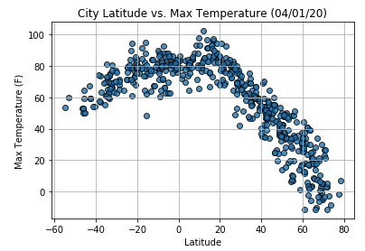

Max Temperature
Max Temperature.
As expected, the weather becomes significantly warmer as one approches the equator (0 Deg. Latitude) More interstingly, however, is the fact that the southern hemisphere tends to be warmer this time of the year than northern hemisphere. This may be due to the tlit of the earth at the time of the year this data was gathered.
